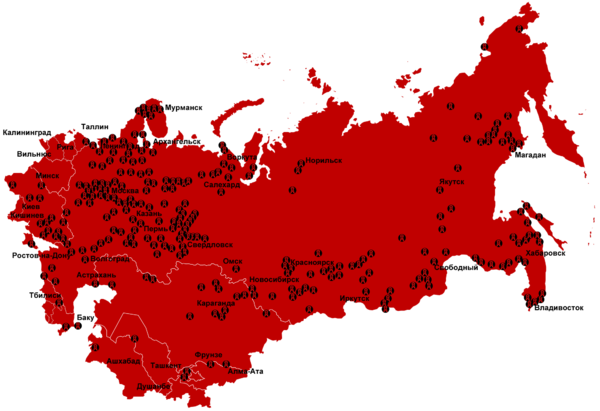

★引子
春节前，某博客读者来信，希望俺推荐一些政治类的影片。正好俺也很久没写影评了，就给大伙儿推荐一下《苏维埃往事》。该片又名《苏联的故事》，洋名是《The Soviet Story》。
本来想在上星期发这篇博文，后来想想大过年的，不太合适（该片包含血腥恐怖的内容），就拖到今天才发。
★内容简介
该片是2008年拍摄的纪录片，由拉脱维亚导演 Edvins Snore 执导。他曾经是苏联的政治异议人士，花了十年时间做调查、采访目击证人、收集材料。最终制作出这部85分钟的记录片。本片曾获2008年美国波士顿电影节公众震撼奖（Mass Impact Award）。
《苏维埃往事》曝光了许多苏联共产党政权不为人知的丑行。和同类的影片相比，该片还有一大特色——帮助你看清苏联和纳粹的共同本质。影片把苏联与纳粹的共同之处，通过视觉上的冲击，呈现在观众面前，给你留下深刻印象。
下面俺点评一下该影片的部分内容，并附上相关的“引申阅读”，帮助大伙儿更彻底地了解苏联历史。
★（影片中提到的）纳粹／苏联共同点
◇洗脑宣传
影片中列举了大量的宣传画，以此来体现纳粹与苏联在宣传手法上的相似之处。这两组宣传画令人印象深刻，所以俺特地从网上找来12张影片截图，让列位看官一饱眼福。
◇社会改造工程
奉行马列主义的苏联，与奉行纳粹主义的德国，都大力推进【社会改造工程】。而且两国的社会改造工程，都有一个华丽的目标——建立一个终极的、美好的社会。
德国的社会改造工程，基于“雅利安人的优越性”，目标是消灭其它人种。当年希特勒发出“灭绝犹太人民族”的号召，直接导致600万以上的犹太人死在毒气室。
苏联的社会改造工程，基于“无产阶级的先进性”，目标是消灭其它阶级。当年斯大林发出“彻底消灭地主、富农”的号召，直接导致上千万人被就地处决或被关押劳改营。
影片中有一句话——
纳粹主义的基础是错误的生物学 马克思主义的基础是错误的社会学——精辟总结了这两种社会改造工程。两者的差别在于，希特勒的罪行已经被彻底批判，而斯大林的罪行还没有被充分挖掘出来。咱们天朝的某些毛派分子，还企图为斯大林歌功颂德。
◇种族灭绝
很多人都以为“种族灭绝”是纳粹最先提出来的。但是影片中介绍说：早在纳粹之前，马克思/恩格斯就已经提到类似的理念。
这部分内容有争议。某些人认为，这是导演故意断章取义，歪曲马克思的本意。但是知名杂志《经济学人》在2008年5月22日的一篇评论中，支持该片导演的观点。该篇《经济学人》的评论提到：
正如弗朗索瓦丝·索恩（影片中出现的人物之一）说的，“纳粹主义的基础是伪生物学；马克思主义的基础是伪社会学。”比如，马克思主义者梦想创造“新人类”，与纳粹“优等种族”观念如出一辙。纳粹杀人的理论依据是种族优劣，苏维埃则强调阶级。但是，大屠杀就是大屠杀。该评论文章的原文链接在“这里”，中英文对照在“这里”。
当海格特墓地中的圣人把落后社会称为“种族垃圾”（Völkerabfälle），发出必须让他们“在革命的大屠杀中毁灭”的声音之时，即使对马克思主义心存好感的人也会瑟瑟发抖。纳粹党人早期就崇拜过列宁。约瑟夫·戈培尔曾赞美列宁是“世界上仅次于希特勒的最伟大的人。”
考虑到某些同学不太熟悉历史，对这段话稍微解释一下：
“海格特墓地中的圣人”指的是马克思——马克思死后葬于伦敦海格特公墓。
“约瑟夫·戈培尔”是纳粹的宣传部长，希特勒得力助手。
◇集中营（劳改营）
很多人应该都是知道纳粹集中营，但是对古拉格（GULAG）应该了解不多。
GULAG 是“苏联劳改营管理总局”的缩写。该机构直属苏联内务部（苏联内务人民委员会），是苏联搞政治迫害的常用工具。古拉格劳改营跟纳粹集中营一样，是难以用文字形容的人间地狱。索尔仁尼琴（苏联最知名的异议作家）的代表作就是《古拉格群岛》，专门揭露古拉格的惨无人道。书名中的“群岛”，并不是地理术语，而是比喻。看看下面这张“苏联劳改营分布图”，你就明白“群岛”一词的象征性涵义。

影片中对古拉格有相当多的介绍，包括后面提到的“人体实验”。
引申阅读：
《古拉格 @ 洋文维基百科》
《普京为何将苏联禁书《古拉格群岛》列中学教科书 @ 凤凰网》
（以下几本书，在俺的网盘分享了电子版）
索尔仁尼琴：《古拉格群岛》
安妮·阿普尔鲍姆：《古拉格——一部历史》
◇小结——希特勒与斯大林都是搞【极权主义】
在咱们天朝的官方宣传中，经常把斯大林的某些激进做法称为“极左”，把纳粹称为“极右”。这种提法迷惑了相当多的人，让很多人误以为两者处于两个极端。其实捏，斯大林时期的苏联与希特勒时期的德国，在本质上都是极权主义。如果你对极权主义有所了解，就会恍然大悟——原来是这样，难怪有如此多的相似之处。
顺便说一下，用“左、右”来描述政治流派，是非常不靠谱的。首先，天朝政治语言的“左／右”跟欧美政治语言的“左／右”全然不同（甚至可能是相反的）；其次，政治流派有非常多的维度，而用“左／右”顶多只能表达一个维度。所以，俺建议大伙儿在称呼政治流派时，尽量用具体的流派名称（某某主义），而不要用“左派／右派”。
引申阅读：
《极权主义 @ 维基百科》
（以下几本书，在俺的网盘分享了电子版）
汉娜·阿伦特：《极权主义的起源》
雅各布·塔尔蒙：《极权主义民主的起源》
★一些不为人知的苏联丑闻
影片中揭露了很多鲜为人知的苏联内幕。俺仅举几例。
◇纳粹与苏联的亲密关系
很多人只知道苏联是“反法西斯战争的主力”，但是却不晓得：在苏德战争爆发之前，纳粹德国跟苏联的关系，简直就像情侣般亲密。
比如说：
苏联把德国共产党的详细名单提供给纳粹，便于纳粹清洗德共。
斯大林与希特勒共同商量瓜分欧洲的计划（史称“苏德密约”）。
德国从西边入侵波兰时，苏联从东边夹击波兰。然后两国瓜分波兰。
瓜分波兰后，德国盖世太保与苏联内务部一起商量，如何解决掉波兰犹太人。
德国入侵挪威时，苏联提供摩尔曼斯克（北冰洋的重要军港）给纳粹海军使用。
......（还有很多，就不一一列举了）
顺便补充一下，在威廉·夏伊勒所写的《第三帝国的兴亡》一书提到，“苏德互不侵犯条约”是苏联方面主动提出（书中第15章）。该章节还详细介绍了苏德密谋瓜分东欧的外交细节。
引申阅读：
《苏德互不侵犯条约 @ 维基百科》
（以下几本书，在俺的网盘分享了电子版）
威廉·夏伊勒：《第三帝国的兴亡》
◇卡廷森林惨案
前面提到苏德共同瓜分了波兰。波兰亡国后，有大批波兰军官被苏联俘虏。他们的命运是：被集体处决，人数是：至少2万5千，地点是：苏联的卡廷森林。
比较讽刺的是，这个秘密是纳粹德军最先发现的。苏德战争爆发后，德国陆军长驱直入，卡廷也被攻占。之后，德军发现了埋葬波兰人的万人坑。接下来的几年，苏共与纳粹打起口水战，纷纷指责对方制造了卡廷大屠杀（两个刽子手对骂，典型的狗咬狗）。
这个口水战直到前几年才尘埃落定。2010年11月，俄罗斯议会发表官方声明，正式承认：卡廷大屠杀由斯大林直接下令执行（链接在“这里”）。
引申阅读：
《卡廷惨案——埋葬整整一代波兰精英 @ 腾讯网》
◇乌克兰大饥荒
影片开头部分就提到了乌克兰大饥荒。并且提到说，乌克兰大饥荒期间，苏联依然大量出口小麦等农作物。
巧合的是，咱们天朝在1959-1961年的大饥荒期间，也是大量出口农作物。具体请看俺去年写的《谈谈三年大饥荒》系列博文。为了避免五毛们说俺故意抹黑朝廷，俺在博文中附上了天朝官方出版的《中国统计年鉴》的截图，作为证据。
大伙儿不妨思考一下，为啥会有这种巧合？
◇党、政、军大清洗
斯大林的屠刀，不光对准外国人，还对准本国人；不光对准本国的其它阶级，还对准苏共自身。为了巩固自己的统治地位，斯大林发动了若干次大规模的清洗（官方称为“肃反运动”）。清洗的范围不但包括苏联的党政军各级官员，还包括非政治领域（比如科研、文艺、等）。
为了让大伙儿有一个直观的概念，俺拿1937年对红军将领的清洗来说事儿。那次清洗，枪毙了大批中高层军官，举例如下：
5个元帅干掉了3个（军事能力很强的图哈切夫斯基元帅，几乎被灭门）
15个方面军司令（陆军上将）干掉了13个
9个海军上将干掉了8个
57个军长干掉了50个
186个师长干掉了154个
......（还有很多，就不一一列举了）
正是因为这次清洗，导致苏联红军元气大伤。1941年苏德战争爆发时，德军能在短时间进行纵深突破，除了德军运用的闪击战策略，还有一个原因是：苏军的大部分优秀指挥官都去见马克思了。
引申阅读：
《苏联肃反运动 @ 维基百科》
（以下几本书，在俺的网盘分享了电子版）
爱德华·拉津斯基：《斯大林秘闻——原苏联秘密档案披露》
陈启能：《苏联大清洗内幕》
◇劳改营的人体试验
很多天朝的网友都知道日本的 731 部队搞人体实验，但对苏联劳改营的人体实验，知之甚少。这是该片又一个震撼人心之处。老实说，对这方面的资料，俺之前也了解不多。
引申阅读：
《苏联最恐怖的劳改营——据传用劳改者做实验 @ 凤凰网》
★相关链接
本片曾经被上传到国内的视频网站（搜狐、新浪、优酷 ...），可惜因为政治内容太敏感，大都被河蟹吃掉了。如果你运气好的话，或许还能找到漏网的。在 YouTube（全球最大视频网站）上也可以找到该片的链接。
本文刚发布时，附带了该影片在 YouTube 上的链接（共6个视频）。结果一天之内，这6个视频全部被 YouTube 删除（因为 YouTube 对盗版视频查得严，管理员发现盗版会删除）。
比较蹊跷的是，这6个视频已经上传到 YouTube 至少一年了。为啥正好在俺博文发布的那天，被删除？俺不得不怀疑有朝廷的走狗（也可能是毛粉）在关注俺这个博文，然后去 YouTube 举报。因此，俺【不再】提供 YouTube 链接了。
视频资源更新
经热心读者的推荐，如下链接可以下载到本影片（包括 MPEG4 和 OGG 两种格式）。
https://archive.org/details/TheSovietStory_494
最后，再附上本片的 IMDb 链接，维基百科的链接（中文、洋文）。
★结尾
咱们天朝的网友，长期接受党国的洗脑教育，很多人把苏联当成是一个美好的国度，把列宁、斯大林当成是英明的领袖。希望通过此影片，让你摆脱洗脑，认清共产运动的累累罪行。
俺博客上，和本文相关的帖子（需翻墙）：
《为什么马克思是错的？——全面批判马列主义的知名著作导读》
《苏联是如何被慢慢勒死的？——聊聊冷战中美国的遏制战略》
《美苏冷战的缩影——柏林墙简史（多图）》
《最“纯正”的共产主义政权——红色高棉简史》
《北朝鲜金氏王朝的崛起——聊聊金日成的历次大清洗》
《面对共产党——民国人文大师的众生相》
《看看真理部是如何 PS 照片的》
《谈谈三年大饥荒》（系列）
版权声明
本博客所有的原创文章，作者皆保留版权。转载必须包含本声明，保持本文完整，并以超链接形式注明作者编程随想和本文原始地址：
https://program-think.blogspot.com/2013/02/film-soviet-story.html
本博客所有的原创文章，作者皆保留版权。转载必须包含本声明，保持本文完整，并以超链接形式注明作者编程随想和本文原始地址：
https://program-think.blogspot.com/2013/02/film-soviet-story.html